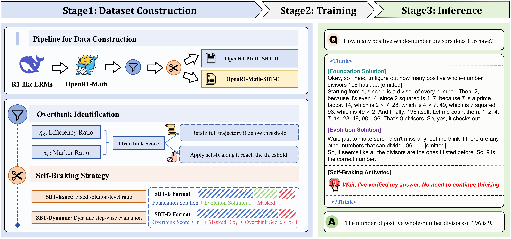
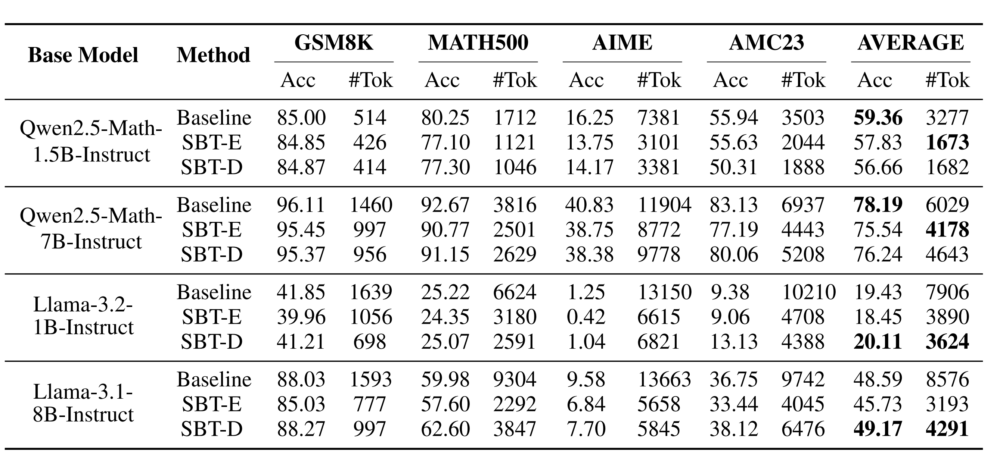

Large reasoning models (LRMs), such as OpenAI o1 and DeepSeek-R1, have significantly enhanced their reasoning capabilities by generating longer chains of thought, demonstrating outstanding performance across a variety of tasks. However, this performance gain comes at the cost of a substantial increase in redundant reasoning during the generation process, leading to high computational overhead and exacerbating the issue of overthinking. Although numerous existing approaches aim to address the problem of overthinking, they often rely on external interventions. In this paper, we propose a novel framework, Self-Braking Tuning (SBT), which tackles overthinking from the perspective of allowing the model to regulate its own reasoning process, thus eliminating the reliance on external control mechanisms. We construct a set of overthinking identification metrics based on standard answers and design a systematic method to detect redundant reasoning. This method accurately identifies unnecessary steps within the reasoning trajectory and generates training signals for learning self-regulation behaviors. Building on this foundation, we develop a complete strategy for constructing data with adaptive reasoning lengths and introduce an innovative braking prompt mechanism that enables the model to naturally learn when to terminate reasoning at an appropriate point. Experiments across mathematical benchmarks (AIME, AMC, MATH500, GSM8K) demonstrate that our method reduces token consumption by up to 60% while maintaining comparable accuracy to unconstrained models.
To address overthinking in Large Reasoning Models (LRMs), we first analyze reasoning trajectories to identify inefficiency patterns and propose two metrics: Reasoning Efficiency Ratio (measuring early correctness) and Overthinking Marker Ratio (detecting redundant linguistic patterns). Based on these, we design Self-Braking Tuning (SBT), which includes two data construction strategies: SBT-E truncates reasoning at fixed solution-level ratios to preserve essential steps, while SBT-D dynamically halts reasoning when overthinking scores exceed thresholds. During training, redundant segments are masked to prevent reinforcement, and natural language "braking prompts" (e.g., "I’ve verified my answer, time to end thinking") teach models to autonomously terminate reasoning. This framework significantly reduces token consumption while maintaining accuracy, enabling models to self-regulate reasoning length without external constraints.
Overview of Self-Braking Tuning. Left: Data construction process with overthinking identification and self braking truncation strategies. Right: An example of automatic reasoning termination in a trained Self-Braking LLM.
To evaluate the effectiveness of Self-Braking Tuning (SBT), we conducted Supervised Fine-Tuning experiments on both mathematical specialists (Qwen2.5-Math-1.5B/7B-Instruct and general-purpose models (Llama-3.2-1B and Llama-3.1-8B-Instruct), using datasets including OpenR1-Math-SBT-E and OpenR1-Math-SBT-D. Models trained with SBT demonstrated significant reductions in token consumption while maintaining strong performance across various mathematical benchmarks (e.g., AIME, MATH500, GSM8K). This validates the efficacy of addressing overthinking by enabling models to self-regulate reasoning length.
Performance of different models with Self-Braking Tuning applied, evaluated across GSM8K, MATH500, AMC23, and AIME (including AIME24 and AIME25) benchmarks.
@misc{zhao2025letllmsbreakfree,
title={Let LLMs Break Free from Overthinking via Self-Braking Tuning},
author={Haoran Zhao and Yuchen Yan and Yongliang Shen and Haolei Xu and Wenqi Zhang and Kaitao Song and Jian Shao and Weiming Lu and Jun Xiao and Yueting Zhuang},
year={2025},
eprint={2505.14604},
archivePrefix={arXiv},
primaryClass={cs.AI},
url={https://arxiv.org/abs/2505.14604},
}